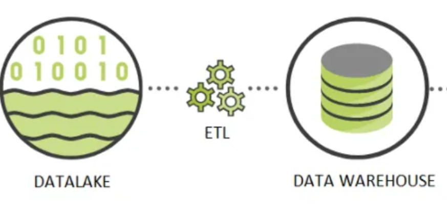

Phase 2 : De la « Matière Brute » à l'Intelligence Décisionnelle
Félicitations ! Votre Data Lake (la Zone Bronze) est désormais une réalité physique. Votre infrastructure de stockage reflète une base solide de données brutes prête à être exploitée :
/ImmoVision360_Project
├── /data
│ └── /raw <-- Zone "Bronze" (Données Brutes)
│ ├── /tabular
│ │ ├── listings.csv <-- +70 colonnes, format brut
│ │ └── reviews.csv
│ ├── /images/ <-- Milliers de fichiers [ID].jpg
│ └── /texts/ <-- Milliers de fichiers [ID].txt
├── /scripts
│ ├── 00_data.ipynb
│ ├── 01_ingestion_images.py
│ ├── 02_ingestion_textes.py
│ └── 03_sanity_check.py
└── README.mdCependant, en l'état, ces données sont massives, désorganisées et « muettes ». Un fichier CSV de 70 colonnes, des milliers de photos éparpillées et des blocs de commentaires bruts ne permettent pas de prendre des décisions politiques.
L'objectif de cette deuxième phase est d'opérer une mutation majeure : transformer votre Data Lake (non structuré et lourd) en un véritable Data Warehouse sous PostgreSQL. Vous allez créer la Zone Silver : un environnement ultra-structuré, typé et requêtable en temps réel.

Pour orchestrer cette métamorphose sans créer un code monolithique et illisible, nous adoptons un pipeline découpé en trois scripts distincts, autonomes et spécialisés.
1. 04_extract.py : le filtre stratégique
Son rôle est d'ouvrir la porte du Data Lake pour trier « le grain de l'ivraie ». Sur les 70 colonnes du CSV initial, seules quelques-unes portent le signal utile pour la Maire.
2. 05_transform.py : l'alchimie des données
C'est ici que s'opère la véritable valeur ajoutée. Ce script nettoie les données filtrées et les enrichit.
- Action : nettoyage des valeurs manquantes (
NaN) et feature engineering multimodal. Vous transformez les images (.jpg) et les textes (.txt) en nouvelles colonnes numériques (scores de standardisation, sentiment, nuisances).
3. 06_load.py : l'ancrage relationnel
C'est le point d'aboutissement du pipeline. La donnée quitte le monde volatil des fichiers CSV pour rejoindre la rigueur du SQL.
- Action : injection propre du fichier « Silver » transformé dans une table PostgreSQL parfaitement typée.
- Résultat : un entrepôt de données prêt pour les requêtes complexes et la visualisation finale.
En séparant l'extraction, la transformation et le chargement, vous garantissez la maintenance et l'évolutivité de votre projet. Chaque étape est documentée, logguée et surtout idempotente : vous pouvez relancer le pipeline sans jamais corrompre votre base de données.
Voici l'arborescence cible une fois la Zone Silver et les scripts ETL en place :
/ImmoVision360_Project
├── /data
│ ├── /raw <-- Zone "Bronze" (Inchangée)
│ │ ├── /tabular
│ │ │ ├── listings.csv
│ │ │ └── reviews.csv
│ │ ├── /images/ <-- [ID].jpg
│ │ └── /texts/ <-- [ID].txt
│ │
│ └── /processed <-- Zone "Silver" (NOUVEAU)
│ ├── filtered_elysee.csv <-- Généré par 0.4_extract.py
│ └── transformed_elysee.csv <-- Généré par 0.5_transform.py
│
├── /scripts
│ ├── 01_ingestion_images.py
│ ├── 02_ingestion_textes.py
│ ├── 03_sanity_check.py
│ ├── 0.4_extract.py <-- Filtrage & Sélection métier (Pandas)
│ ├── 0.5_transform.py <-- IA : Image2Feature & Text2Feature
│ └── 0.6_load.py <-- Injection PostgreSQL (SQLAlchemy)
│
├── .env <-- Config (DB_USER, DB_PASSWORD)
├── .gitignore <-- Exclut /data/* et .env
└── README.md <-- Documentation du Pipeline
Les sections suivantes du support détaillent le développement de chaque script (04_extract, 05_transform, 06_load) dans l'ordre du pipeline.
04_extract : la stratégie de sélection des données
L'extraction est l'étape où l'ingénieur de données exerce son esprit critique. Le fichier listings.csv que vous avez ingéré contient plus de 70 colonnes. Stocker l'intégralité de ces données dans votre Data Warehouse serait une erreur stratégique : cela ralentit les calculs, sature la mémoire et brouille l'analyse.
Avant de coder, il faut cartographier la richesse du gisement de données. Voici une description des features du fichier listings.csv :
Description des colonnes de listings.csv (cliquer pour développer)
1. Identifiants et liens (IDs & URLs)
id: identifiant unique de l'annonce.listing_url: lien direct vers l'annonce sur Airbnb.scrape_id: identifiant interne de la session de collecte de données.last_scraped: date de la dernière extraction.source: origine de l'annonce (ex. « city scrape »).picture_url: URL de la photo principale.
2. Informations sur l'hôte (Host)
host_id: identifiant de l'hôte.host_url/host_name: profil et nom de l'hôte.host_since: date d'arrivée de l'hôte sur Airbnb.host_location/host_about: localisation et biographie.host_response_time/host_response_rate: réactivité aux messages.host_acceptance_rate: taux d'acceptation des demandes.host_is_superhost: statut de Superhost (t/f).host_thumbnail_url/host_picture_url: photos de profil.host_neighbourhood: quartier de l'hôte.host_listings_count/host_total_listings_count: nombre d'annonces de l'hôte.host_verifications: méthodes de vérification (email, téléphone, etc.).host_has_profile_pic/host_identity_verified: indicateurs de confiance.
3. Localisation et description du bien (Location & Description)
name/description: nom et descriptif commercial.neighborhood_overview: présentation du quartier par l'hôte.neighbourhood/neighbourhood_cleansed: nom du quartier (brut et nettoyé).neighbourhood_group_cleansed: groupe de quartiers (souvent vide pour Paris).latitude/longitude: coordonnées GPS exactes.property_type: type de bien (appartement, loft, etc.).room_type: type de location (logement entier, chambre partagée, etc.).
4. Caractéristiques physiques (Amenities & Capacity)
accommodates: nombre de voyageurs maximum.bathrooms/bathrooms_text: détails sur les salles de bain.bedrooms/beds: nombre de chambres et de lits.amenities: liste JSON des équipements (Wi-Fi, cuisine, etc.).price: prix par nuitée.
5. Règles et séjour (Booking Rules)
minimum_nights/maximum_nights: limites de durée de séjour.minimum_minimum_nights/maximum_minimum_nights: variantes de séjours minimums.minimum_maximum_nights/maximum_maximum_nights: variantes de séjours maximums.minimum_nights_avg_ntm/maximum_nights_avg_ntm: moyennes de durées de séjour.
6. Disponibilité (Availability)
calendar_updated: dernière mise à jour du calendrier.has_availability: disponibilité actuelle (t/f).availability_30/60/90/365: disponibilité sur les X prochains jours.calendar_last_scraped: date du dernier scrap du calendrier.
7. Avis et évaluation (Reviews)
number_of_reviews: volume total de commentaires.number_of_reviews_ltm/l30d: commentaires récents (12 mois / 30 jours).first_review/last_review: dates de début et de fin des avis.review_scores_rating: note globale (sur 5).review_scores_accuracy/cleanliness/checkin/communication/location/value: notes détaillées par critère.reviews_per_month: moyenne mensuelle de commentaires.
8. Gestion et réglementation
license: numéro d'enregistrement légal.instant_bookable: réservation instantanée activée (t/f).calculated_host_listings_count: nombre d'annonces gérées par l'hôte (total, logements entiers, chambres privées/partagées).
Pour répondre à la Maire de Paris, nous n'allons pas « tout » garder. Nous allons sélectionner uniquement les colonnes qui servent de carburant à nos trois hypothèses majeures.
A. Hypothèse économique : la concentration des biens
Question : est-ce une économie de partage ou une industrie hôtelière masquée ?
- Features à extraire :
calculated_host_listings_count(détecteur de multipropriétés),price,property_type,room_typeetavailability_365. - Indice de preuve : si 5 % des hôtes contrôlent 60 % des biens du quartier, vous prouvez une gestion industrielle.
B. Hypothèse sociale : la déshumanisation de l'accueil (lien social)
Question : le lien social se brise-t-il au profit de processus automatisés ?
Le cœur de la preuve viendra des fichiers .txt (commentaires agrégés) et du NLP en phase transform. En complément, vous pouvez conserver dans l'extract des indicateurs tabulaires utiles : host_response_time et host_response_rate — les agences ou acteurs professionnels ont souvent des taux de réponse proches de 100 % avec des délais très courts (gestion professionnelle), ce qui peut trancher avec un hôte « résident » plus irrégulier.
C. Hypothèse visuelle : la standardisation « Airbnb-style »
Question : les logements sont-ils devenus des produits financiers stériles ?
Aucune feature intéressante dans le CSV seul : nous utiliserons les images pour créer une feature au moment du transform.
Implémentation technique : créer le DataFrame filtré
Le script 0.4_extract.py doit effectuer cette sélection de manière propre et répétable (idempotence).
Étapes du script :
- Chargement : lire le fichier
data/raw/tabular/listings.csv. - Sélection : définir une liste de colonnes
COLS_TO_KEEPbasée sur la réflexion métier ci-dessus. - Filtrage géographique : ne traiter que le quartier de l'Élysée (même logique que en Phase 1).
- Sauvegarde : exporter le résultat dans
data/processed/filtered_elysee.csv.
Dans votre script, documentez chaque colonne conservée avec un commentaire expliquant à quelle hypothèse elle se rattache. Un code qui explique pourquoi il garde une donnée est un code de qualité professionnelle.
05_Transform : l'alchimie et l'enrichissement par l'IA
Cette partie insiste sur l'importance de l'exploration des données (EDA — Exploratory Data Analysis) et du profiling avant de lancer des pipelines de transformation automatiques. L'objectif est de métamorphoser votre fichier filtré en une base propre et « intelligente », enrichie par l'IA — sans jamais transformer à l'aveugle. Règle d'or : comprendre ses données, puis coder.
1. L'exploration : comprendre avant d'agir (data profiling)
Avant de rédiger votre script 0.5_transform.py (équivalent logique 05_transform.py), prenez le temps d'explorer vos données. Utilisez votre notebook 00_data.ipynb (ou de petits scripts d'exploration annexes) pour auditer l'état de santé du jeu de données.
Que devez-vous chercher ?
- Les valeurs aberrantes (outliers) : un appartement à 0 € la nuit ? Ou à 15 000 € ?
- Les formats incohérents : le prix est-il un nombre exploitable ou une chaîne avec symbole monétaire (ex.
"$120.00") ? - Les valeurs manquantes (
NaN) : quel pourcentage de cellules est vide ?
Théorie : que faire face aux valeurs manquantes ?
Face à des features manquantes, trois stratégies classiques :
- La suppression (drop) : si une donnée critique (
price, identifiant, etc.) manque, la ligne peut devenir inutile — on la retire. - L'imputation statistique : remplacer le vide par la moyenne ou la médiane de la colonne (ex. notes
review_scores) sans trop fausser la distribution. - L'imputation logique : donner du sens au vide. Ex. si
reviews_per_monthest vide car le logement est neuf, remplacer leNaNpar0peut être la décision la plus juste.
2. Le script de production (0.5_transform.py)
Une fois le diagnostic posé à l'exploration, vous codez le script final. Il automatise deux grandes étapes : le nettoyage de base et la création de nouvelles features propulsées par l'IA.
A. Nettoyage et normalisation
C'est le « repassage » de la donnée. Votre script applique systématiquement vos règles :
- convertir les prix en nombres réels (
float) ; - gérer les
NaNselon les stratégies définies ci-dessus ; - plafonner ou supprimer les valeurs aberrantes pour ne pas fausser les analyses pour la Maire de Paris.
B. Enrichissement multimodal par l'IA (inférence)
Une fois la base saine, vous lui donnez une profondeur analytique : deux nouvelles colonnes (features) via l'API Google AI Studio et le modèle gemini-1.5-flash (ou équivalent validé en cours — respectez les quotas et la confidentialité des clés API, idéalement via variables d'environnement).
Feature 1 — « Standardization Score » (image → texte)
L'IA « voit » chaque image pour estimer si le logement a une âme résidentielle ou ressemble à une chambre d'hôtel standardisée. La réponse est intégrée dans une nouvelle colonne, par exemple Standardization_Score (ou équivalent encodé numériquement selon votre grille).
import google.generativeai as genai
import PIL.Image
# Configuration de la clé API (préférez une variable d'environnement en production)
genai.configure(api_key="VOTRE_CLE_API_ICI")
model = genai.GenerativeModel("gemini-1.5-flash")
img = PIL.Image.open("data/raw/images/ID_123.jpg")
prompt = """
Analyse cette image et classifie-la strictement dans l'une de ces catégories :
- 'Appartement industrialisé' (Déco minimaliste, style catalogue, standardisé, froid)
- 'Appartement personnel' (Objets de vie, livres, décoration hétéroclite, chaleureux)
- 'Autre' (Si l'image ne montre pas l'intérieur d'un logement)
Réponds uniquement par le nom de la catégorie.
"""
response = model.generate_content([prompt, img])
print(response.text) # Cette valeur alimente votre nouvelle colonneMappez la sortie du modèle vers votre colonne Standardization_Score (catégorie ou score numérique selon votre choix pédagogique).
Feature 2 — « Neighborhood Impact » (texte → texte)
Les fichiers .txt agrègent les commentaires voyageurs : l'expérience vécue. Utilisez le même modèle (gemini-1.5-flash) en lui passant le contenu du fichier texte pour classer le type d'expérience attendu : « Hôtélisé » (boîte à clés, consignes professionnelles, peu de contact humain) vs « Voisinage naturel » (rencontre avec l'hôte, conseils de quartier, vie locale).
Utilité métier : cette feature permet d'appuyer l'hypothèse sociale de la Maire — par exemple : « Dans ce quartier, X % des séjours relèvent d'un mode hôtélisé / peu humain. » Stockez le résultat dans une colonne dédiée, par exemple neighborhood_impact.
3. Livrable de la phase Transform
L'exécution de 0.5_transform.py doit parcourir chaque ligne de la base filtrée, appeler l'IA pour chaque image et chaque texte associés, puis consolider le tout dans un fichier unique :
data/processed/transformed_elysee.csv